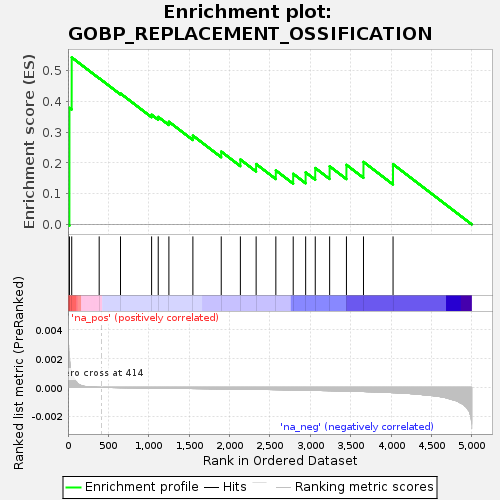
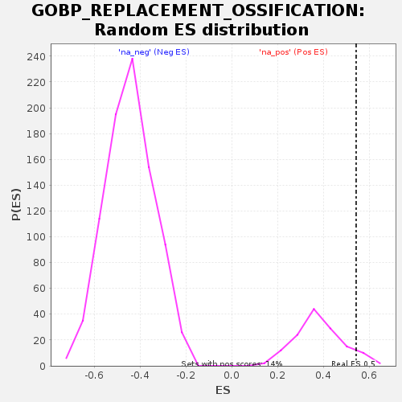

| Dataset | GEP4_vs_GEP6_residuals |
| Phenotype | NoPhenotypeAvailable |
| Upregulated in class | na_pos |
| GeneSet | GOBP_REPLACEMENT_OSSIFICATION |
| Enrichment Score (ES) | 0.5425489 |
| Normalized Enrichment Score (NES) | 1.4140297 |
| Nominal p-value | 0.08695652 |
| FDR q-value | 0.7758166 |
| FWER p-Value | 1.0 |

| SYMBOL | RANK IN GENE LIST | RANK METRIC SCORE | RUNNING ES | CORE ENRICHMENT | |
|---|---|---|---|---|---|
| 1 | BMP6 | 18 | 0.002 | 0.3788 | Yes |
| 2 | RUNX2 | 46 | 0.001 | 0.5425 | Yes |
| 3 | MMP13 | 386 | 0.000 | 0.4750 | No |
| 4 | CSGALNACT1 | 650 | -0.000 | 0.4255 | No |
| 5 | FOXC1 | 1035 | -0.000 | 0.3565 | No |
| 6 | FGF18 | 1117 | -0.000 | 0.3494 | No |
| 7 | COL13A1 | 1249 | -0.000 | 0.3337 | No |
| 8 | TMEM119 | 1546 | -0.000 | 0.2887 | No |
| 9 | DLX5 | 1897 | -0.000 | 0.2368 | No |
| 10 | SMPD3 | 2134 | -0.000 | 0.2110 | No |
| 11 | ALPL | 2329 | -0.000 | 0.1963 | No |
| 12 | BMP4 | 2573 | -0.000 | 0.1756 | No |
| 13 | MEF2C | 2788 | -0.000 | 0.1646 | No |
| 14 | FGFR3 | 2942 | -0.000 | 0.1692 | No |
| 15 | NPR2 | 3061 | -0.000 | 0.1833 | No |
| 16 | COL1A1 | 3239 | -0.000 | 0.1890 | No |
| 17 | SCX | 3447 | -0.000 | 0.1937 | No |
| 18 | MMP14 | 3658 | -0.000 | 0.2032 | No |
| 19 | NAB2 | 4024 | -0.000 | 0.1957 | No |
